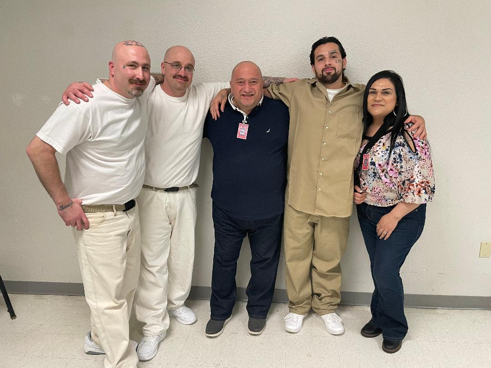
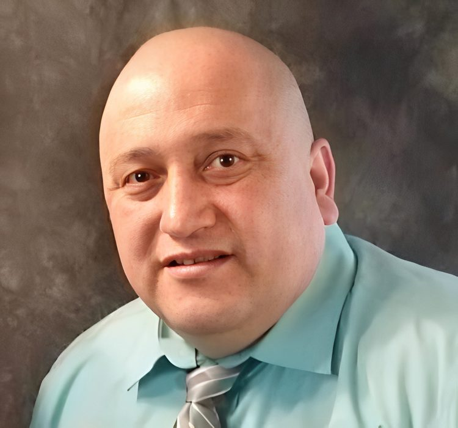
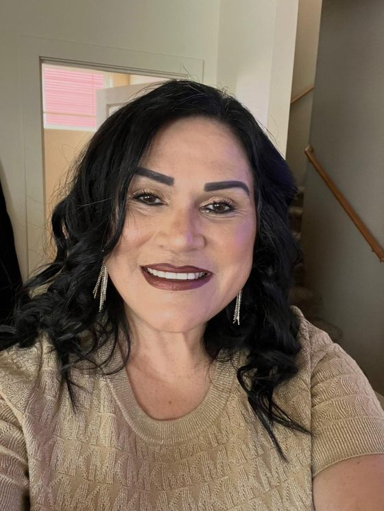
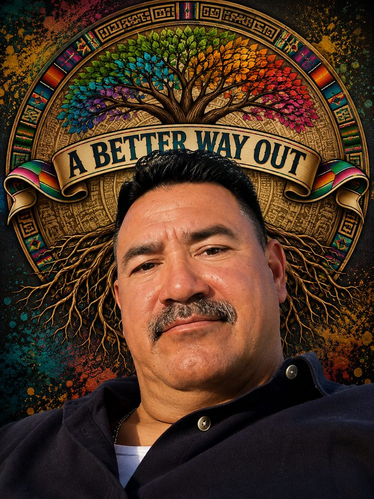

About Us
Our story, our mission, and the people who make it possible.

Our story begins with a simple belief: young people deserve more than judgment; they deserve understanding, opportunity, and hope. Our organization was built by individuals who have walked the very paths we now guide others through. Our team is led by mentors whose shared lived experiences reflect the realities faced by many of the youth we serve. They know what it means to struggle with identity, navigate generational trauma, overcome harmful environments, and rebuild life after stepping back into the community.
Each mentor carries a personal story of mistakes made, lessons learned, families impacted, and a healing journey that reshaped their purpose. Their experiences are not just history; they are tools. Tools that empower them to meet young people with empathy, cultural awareness, and a deep understanding of what it takes to break cycles that have lasted for generations.
We understand how cultural identity, family systems, community pressures, and past trauma can shape a young person's choices. Many of our team members have lived through environments marked by violence, instability, and harmful influences. Some have faced the heavy challenges of reentry, rebuilding trust, and redefining themselves after incarceration. These journeys fuel our passion to serve not from a distance, but from a place of authentic connection.
A Better Way Out exists to stand in that gap.
To offer non-judgmental, trauma-informed support to young people who are actively involved in or at risk of influences that may harm their future. We meet youth where they are, without shame or labels. Through mentorship, community connections, and compassionate guidance, we help them build hope, resilience, and a new vision for their lives.
This is more than a program. It is a movement of healing, restoration, second chances and A Better Way Out led by people who know firsthand that transformation is possible.
Leadership & Board
The people behind the mission

David Garcia
Founder & Executive Director
David Garcia is the founder and Executive Director of A Better Way Out, a Washington State nonprofit dedicated to empowering at-risk youth and returning citizens in Whatcom County. Freed from a life marked by trauma, gang affiliation, and drug trafficking, David's story is not one of self-improvement; it is one of redemption by the mercy and grace of God.
That transformation is the fuel behind everything A Better Way Out does, because David knows firsthand that when God changes a life, He changes it completely. He leads this organization with the authority of someone who has lived the struggle, found the way out, and now dedicates his life to showing others that the same freedom is possible for them.

Bernabe Garcia
Board Member · Youth Ministry Leader
For nearly 50 years, Bernabe Garcia has called Whatcom County home, raised in the town of Lynden as part of a proud immigrant family. As the wife of David Garcia, founder of A Better Way Out, she has led youth ministry since 2009 — first known as Gang Out Ministries and now as A Better Way Out — faithfully serving the community for 17 years.
Bernabe carries a powerful testimony of her own deliverance, rescued by the Lord in 2006 from addiction, abuse, and homelessness through a supernatural dream that changed her life. She now shares that testimony boldly, showing others that they too can be saved and delivered through the power of Jesus Christ, and remains passionate about seeing the people of her community encounter Him.
Mona Galindo
Board Member · Executive Director & Founder of Sent Ones Ministry
As a board member of A Better Way Out, Mona is honored to support its work of empowering youth and strengthening the community. She believes meaningful change begins with meeting people where they are, building genuine relationships, and working together to make sure people feel seen and valued.
She is passionate about supporting community-driven efforts that create lasting impact.

Armando
Board Member
Armando grew up in Whatcom County, the son of immigrant parents who worked hard to give their family a better life. But behind closed doors, abuse from those in positions of authority left deep wounds — wounds that led him down a painful path into gangs and drugs. For years, that was the only life he knew, until it finally brought him to rock bottom, and to prison.
It was there, stripped of everything, that Armando found the one person that never let him go. He gave his life to God, and from that moment, everything began to change. Today he’s grateful for a life he once couldn’t have imagined: a loving family, a home, and a peace he never knew growing up.
Armando serves on the board of A Better Way Out because he knows firsthand what it means to feel lost, and what it means to be found. He’s passionate about giving young people in our community the same hope, grace, understanding, and love that turned his own life around, because he believes every person deserves the chance at a better way out.
Support Our Mission
Your donation directly impacts the lives of at-risk youth in our community. Every contribution helps us provide mentorship, support, and hope to those who need it most.
Volunteer With Us
Making a difference, one life at a time. Join our community of mentors and helpers who walk alongside the youth we serve.